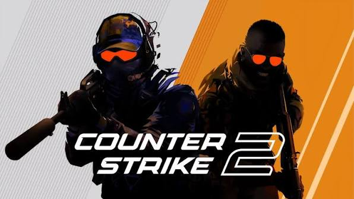

AcciónCounter-Strike 2
Shooter táctico por equipos: 5 contra 5, en rondas cortas donde cada decisión cuenta. Es gratis.
Cómo se juega
- Se enfrentan dos equipos: Terroristas y Antiterroristas.
- Al empezar cada ronda tenés unos segundos para comprar armas con tu dinero.
- Los terroristas deben plantar una bomba en un sitio (A o B) o eliminar al otro equipo. Los antiterroristas deben evitarlo, desactivar la bomba o eliminar a los rivales.
- Si te eliminan, esperás a que termine la ronda. Ganás dinero por ganar rondas y por eliminar rivales.
- En el modo competitivo gana el primer equipo en llegar a 13 rondas.
Controles básicos
- W A S D: moverte
- Shift: caminar despacio (más silencioso)
- Ctrl: agacharte
- Espacio: saltar
- Clic izquierdo: disparar
- R: recargar
- B: abrir el menú de compra
- E: usar objetos y desactivar la bomba
- Tab: ver el marcador
Consejos para empezar
- Hablá con tu equipo: la comunicación es clave.
- Disparás mejor en ráfagas cortas que manteniendo el clic apretado.
- Apuntá a la altura de la cabeza.
- Practicá en modo casual antes de jugar partidas competitivas.